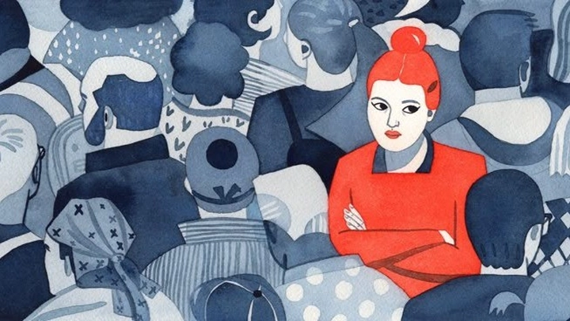
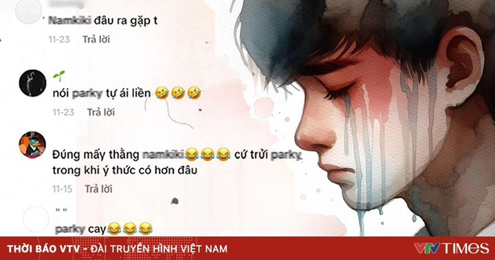
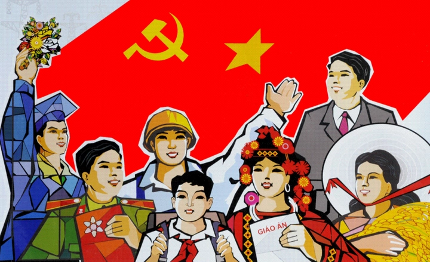

Vấn nạn phân biệt và kỳ thị vùng miền trên mạng xã hội 2025
Mạng xã hội – nơi từng được kỳ vọng sẽ xóa nhòa khoảng cách địa lý, giúp mọi người kết nối và thấu hiểu nhau hơn – giờ đây lại đang dần trở thành “tấm gương” phản chiếu rõ nét nhất những định kiến vốn tiềm ẩn trong xã hội. Thay vì tạo ra sự gắn kết, không ít người lại biến không gian mạng thành nơi củng cố những rào cản vô hình giữa các vùng miền.
Mỗi ngày, chỉ cần lướt qua phần bình luận dưới một video hay bài viết bất kỳ trên mạng xã hội, người ta dễ dàng bắt gặp những câu nói mang tính miệt thị như: “Bắc Kỳ”, “Nam Kỳ”, “Dân Thanh Hoá”, “Hoa Thanh Quế” (quê Thanh Hoá), “Lên phím 36”, “Vương quốc Thanh Hoá”, “Nam Định Hai Ngón”… Những phát ngôn tưởng chừng như bông đùa ấy, khi lặp lại hàng trăm, hàng ngàn lần, lại trở thành vết hằn trong nhận thức tập thể, tạo ra khoảng cách vô hình giữa các nhóm người.

Điều đáng lo ngại là hiện tượng này không chỉ đến từ sự thiếu hiểu biết hay vô tình, mà đôi khi còn được nuôi dưỡng bởi “văn hóa tương tác” trên mạng – nơi những lời nói tiêu cực, mỉa mai, hay đụng chạm vùng miền lại nhận được nhiều lượt “thả haha” và chia sẻ hơn cả những bình luận văn minh. Trong thế giới mà sự chú ý được tính bằng lượt tương tác, nhiều người sẵn sàng châm ngòi tranh cãi vùng miền để “gây bão”, bất chấp hậu quả.
Dưới lớp vỏ của “sự hài hước”, những định kiến vùng miền – vốn đã tồn tại trong xã hội – nay được phóng đại, lan truyền và thậm chí trở thành một “trend” độc hại. Nó khiến những khác biệt tự nhiên về văn hóa, giọng nói, thói quen sinh hoạt giữa các vùng miền – lẽ ra là điều đáng tự hào – bị biến thành lý do để chia rẽ, chế giễu hay phân biệt.
Từ đó, mạng xã hội – đáng lẽ là nơi giúp con người gần nhau hơn – lại đang vô tình (hoặc cố ý) kéo họ ra xa nhau hơn bao giờ hết. Hôm nay hãy cùng TrithucWorld đi tìm hiểu cốt lõi vấn đề của vấn nạn này nhé!
1. Cội nguồn của định kiến vùng miền – Dấu vết của quá khứ và tâm lý cộng đồng
Định kiến vùng miền không phải là sản phẩm mới của thời đại mạng xã hội. Nó đã manh nha từ rất lâu trong đời sống xã hội Việt Nam, bắt nguồn từ sự khác biệt về địa lý, lịch sử, khí hậu, văn hóa, và cả những biến động chính trị trong quá khứ. Khi đất nước còn chia cắt, mỗi vùng miền phát triển trong những điều kiện khác nhau — điều đó tạo nên sự khác biệt tự nhiên về tính cách, lối sống và tư duy.
Theo thời gian, những khác biệt ấy, thay vì được nhìn nhận như sự đa dạng văn hóa đáng quý, lại bị gán ghép thành những khuôn mẫu cứng nhắc: “Miền Bắc khôn ngoan, miền Trung chịu khó, miền Nam phóng khoáng”… Những câu nhận xét tưởng như vô thưởng vô phạt ấy dần trở thành nhãn mác mặc định, được truyền miệng từ thế hệ này sang thế hệ khác.
Trên mạng xã hội, nơi mọi người giao tiếp ẩn danh hoặc nửa ẩn danh, những khuôn mẫu ấy dễ dàng được khơi dậy. Khi người ta không cần chịu trách nhiệm trực tiếp cho lời nói của mình, sự “phân biệt mềm” trở nên phổ biến: một câu đùa về giọng nói, một lời châm chọc về phong tục, hay một bình luận ám chỉ nguồn gốc vùng miền — tất cả đều có thể châm ngòi cho hàng trăm phản ứng dây chuyền.
Một nguyên nhân khác bắt nguồn từ sự thiếu hiểu biết và hời hợt trong nhận thức của một bộ phận cộng đồng, đặc biệt là giới trẻ. Ví dụ như, không ít người vẫn vô thức mang theo những định kiến được truyền miệng qua nhiều thế hệ, như câu vè “Dân Thanh Hóa – ăn rau má – phá đường tàu”. Trong suy nghĩ của nhiều người, câu nói ấy mang ý nghĩa tiêu cực, ám chỉ sự nghèo khó hay manh động.
Thế nhưng, ít ai biết rằng nguồn gốc thật sự của câu vè này lại xuất phát từ lòng yêu nước. Trong thời kỳ kháng chiến chống thực dân Pháp, người dân Thanh Hóa từng phá đường tàu của địch để ngăn chặn việc vận chuyển vũ khí và tiếp tế — một hành động thể hiện tinh thần quả cảm, chứ không phải vì đói nghèo.
Chính sự thiếu tìm hiểu về bối cảnh lịch sử đã khiến những câu nói như vậy bị bóp méo ý nghĩa, từ biểu tượng của tinh thần kháng chiến trở thành lời chế giễu mang tính phân biệt. Khi được lan truyền trên mạng xã hội mà không có sự kiểm chứng hay giải thích, chúng càng củng cố định kiến sai lệch và làm tổn thương niềm tự hào quê hương của những người bị nhắc đến.
Điều đáng sợ không nằm ở việc có người cố tình kỳ thị, mà ở chỗ có quá nhiều người vô tình tiếp tay cho nó. Một lời nói tưởng như vui vẻ, nhưng lại gợi nhớ đến sự chia cắt quá khứ; một “trend” tưởng chừng vô hại, nhưng lại vô tình củng cố định kiến. Và như thế, những bóng ma của định kiến vùng miền – tưởng đã lùi sâu trong lịch sử – lại được hồi sinh mạnh mẽ trong thời đại số.
2. Khi “meme” và “trend” trở thành công cụ lan truyền sự phân biệt
Một trong những đặc điểm nổi bật của mạng xã hội hiện nay là mọi thông điệp đều có thể được “gói” trong vài giây ngắn ngủi hoặc vài hình ảnh đơn giản. Meme, clip, hoặc trend – vốn được sinh ra để giải trí – lại trở thành phương tiện truyền bá mạnh mẽ nhất cho định kiến vùng miền.
Chỉ cần trong xã hội có một câu chuyện tiêu cực nào đó, lập tực hàng chục nghìn lượt chia sẻ có thể lan tỏa khắp các nền tảng. Những câu nói như “lại dân Thanh Hoá ..., “lại dân Bắc Kỳ”, hoặc “dân Nam Định hai ngón ...” trở thành lời đùa cửa miệng. Nhưng đằng sau tiếng cười, đó lại là sự tái khẳng định của phân biệt – thứ khiến người bị nhắc đến cảm thấy tổn thương, xấu hổ, thậm chí tự ti về nguồn gốc của mình.

Tâm lý “theo trend” khiến nhiều người sẵn sàng tham gia mà không suy nghĩ sâu. Họ không cố ý gây tổn thương, nhưng chính hành động đùa theo số đông lại khiến định kiến được nhân rộng. Sự vô tâm cộng hưởng với sự lan truyền của thuật toán — vốn ưu tiên nội dung gây tranh cãi, tương tác cao — khiến mạng xã hội trở thành môi trường lý tưởng cho kỳ thị phát triển.
Đôi khi nhiều bạn trẻ nghĩ rằng việc mình comment theo trend đang thể hiển cá tính hài hước, bắt kịp xu hướng, mà không biết rằng thực ra họ đang vô tình làm vấn nạn kỳ thị vùng miền ngày càng đi xa.
Kỳ thị vùng miền thường không chỉ diễn ra một chiều. Khi một người trở thành nạn nhân của sự kỳ thị, cảm xúc bị tổn thương dễ khiến họ mất bình tĩnh và phản ứng theo bản năng, đôi khi bằng những lời nói gay gắt hoặc xúc phạm ngược lại vùng miền của người đã kỳ thị mình.
Chính những phản ứng tức thời ấy, dù xuất phát từ sự tự vệ, lại vô tình thổi bùng thêm ngọn lửa mâu thuẫn, biến cuộc đối thoại thành cuộc công kích lẫn nhau không hồi kết. Hệ quả là cả hai phía đều rơi vào vòng xoáy tiêu cực — người kỳ thị và người bị kỳ thị đều trở thành nạn nhân, còn mạng xã hội trở thành “đấu trường” của những lời miệt thị liên hoàn, lan rộng như hiệu ứng domino.
3. Tác hại của kỳ thị vùng miền
Kỳ thị vùng miền không chỉ dừng lại ở những lời nói hay bình luận trên mạng – nó để lại những vết thương vô hình nhưng sâu sắc trong tâm lý, văn hoá và cả sự phát triển chung của xã hội. Trước hết, với cá nhân bị kỳ thị, họ dễ rơi vào cảm giác tự ti, bị cô lập và mất niềm tin vào sự công bằng xã hội. Khi một người liên tục bị gắn với những định kiến tiêu cực chỉ vì quê quán, họ có xu hướng giấu đi nguồn gốc của mình, hoặc né tránh nhắc đến nơi mình sinh ra — điều đáng lẽ phải là niềm tự hào.
Với cộng đồng, kỳ thị vùng miền làm xói mòn sự gắn kết dân tộc. Việt Nam là một quốc gia thống nhất sau nhiều biến động lịch sử, nhưng khi những ranh giới “Bắc – Trung – Nam” bị khơi lại dưới góc nhìn tiêu cực, tinh thần đoàn kết ấy dễ bị chia rẽ. Người ta có thể bắt đầu nhìn nhau bằng sự nghi ngờ, đánh giá con người qua giọng nói, cách ăn mặc, hay thậm chí là món ăn đặc trưng của vùng đất đó.
Không chỉ vậy, trên môi trường mạng, những biểu hiện kỳ thị vùng miền còn góp phần lan truyền văn hoá “toxic” – nơi lời lẽ cay nghiệt, sự mỉa mai và những định kiến được xem là “bình thường” hoặc “vui thôi mà”. Sự lan rộng của văn hóa này không chỉ ảnh hưởng đến nhận thức của giới trẻ mà còn làm méo mó cách chúng ta đối thoại và đồng cảm với nhau trong không gian số.
Ở tầm vĩ mô hơn, kỳ thị vùng miền còn có thể cản trở sự phát triển xã hội. Khi những định kiến vùng miền len lỏi vào môi trường làm việc, giáo dục hay chính sách, nó vô hình trung tạo ra rào cản cơ hội — khiến người tài bị đánh giá sai lệch chỉ vì nơi sinh, chứ không phải năng lực thật sự.
Cuối cùng, tác hại lớn nhất của kỳ thị vùng miền là làm suy yếu bản sắc và sự thống nhất dân tộc – điều đã giúp người Việt Nam đứng vững suốt hàng nghìn năm lịch sử. Một xã hội văn minh không thể tồn tại khi con người vẫn còn nhìn nhau bằng ánh mắt phân biệt.
Trong khi cả nước đang đồng sức đồng lòng đoàn kết giúp đỡ lẫn nhau, cứu trợ đồng bào bão lũ, ủng hộ người nghèo khó, giúp đỡ người gặp khó khăn trong xã hội, cùng nhau "viết tiếp câu chuyện Hoà Bình" thì một số bộ phận giới trẻ lại đi ngược lại điều đó bằng cách kỳ thị vùng miền, chia rẽ khối đoàn kết dân tộc.
4. Cần làm gì để chống kỳ thị vùng miền
Để chống lại kỳ thị vùng miền, điều quan trọng nhất là thay đổi nhận thức – từ cá nhân cho đến cộng đồng. Mỗi người cần hiểu rằng, nguồn gốc địa lý không quyết định giá trị hay nhân cách của con người. Một người tốt hay xấu, giỏi hay kém, văn minh hay lạc hậu – không thể được đo bằng giọng nói, tên quê hay món ăn đặc trưng của vùng đất họ sinh ra. Khi nhận thức này được lan tỏa, kỳ thị vùng miền mới có thể dần được xóa bỏ từ gốc rễ.
Trước hết, giáo dục đóng vai trò nền tảng. Ngay từ trường học, cần có những bài học, hoạt động ngoại khóa giúp học sinh hiểu và tự hào về sự đa dạng văn hóa của đất nước. Việc giới thiệu các nét đẹp vùng miền – từ âm nhạc, ẩm thực, phong tục cho đến ngôn ngữ địa phương – không chỉ giúp các em hiểu hơn về quê hương mình, mà còn học cách tôn trọng sự khác biệt. Khi lớn lên trong môi trường coi trọng sự đa dạng, con người sẽ ít có xu hướng đánh giá, phân biệt hay miệt thị người khác.
Tiếp theo, mạng xã hội cần được sử dụng một cách có trách nhiệm hơn. Các nền tảng trực tuyến, nơi phát tán nhanh nhất các định kiến, phải có cơ chế kiểm duyệt và xử lý nghiêm những nội dung mang tính phân biệt, xúc phạm vùng miền. Người dùng – đặc biệt là người trẻ – cần rèn luyện văn hóa phản biện và văn hóa ứng xử trực tuyến, hiểu rằng một câu đùa vô ý cũng có thể khiến người khác tổn thương và tạo nên vòng xoáy thù ghét không đáng có.
Ngoài ra, truyền thông đại chúng và người có ảnh hưởng (KOLs) cũng cần có trách nhiệm trong việc định hướng dư luận. Thay vì khai thác các “trend” miệt thị vùng miền để câu tương tác, họ nên góp phần lan tỏa những thông điệp tích cực: tôn trọng sự khác biệt, tôn vinh giá trị văn hóa từng vùng và cổ vũ tinh thần đoàn kết dân tộc.

Bên cạnh yếu tố nhận thức và giáo dục, khung pháp lý cũng đóng vai trò vô cùng quan trọng trong việc ngăn chặn và xử lý hành vi kỳ thị vùng miền. Hiện nay, Việt Nam chưa có quy định pháp luật cụ thể về “phân biệt vùng miền” như một tội danh độc lập, tuy nhiên các hành vi này có thể được xử lý gián tiếp thông qua các quy định về xúc phạm danh dự, nhân phẩm, bôi nhọ cá nhân hoặc cộng đồng trong Bộ luật Hình sự và Luật An ninh mạng.
Tuy vậy, trước sự phát triển nhanh của mạng xã hội và mức độ lan truyền của các phát ngôn mang tính kỳ thị, rất cần có những hướng dẫn pháp lý rõ ràng hơn, quy định cụ thể về việc xử phạt hành vi miệt thị vùng miền công khai – đặc biệt là trên không gian mạng. Các cơ quan chức năng nên xây dựng hành lang pháp lý nhằm bảo vệ danh dự và bản sắc văn hóa của từng vùng, đồng thời răn đe, ngăn chặn hành vi lợi dụng mạng xã hội để chia rẽ cộng đồng.
Chỉ khi pháp luật, giáo dục và ý thức xã hội cùng song hành, việc chống kỳ thị vùng miền mới có thể đạt được hiệu quả lâu dài – không chỉ trên mặt giấy tờ, mà trong cả ý thức và hành vi của mỗi người.
Cuối cùng, điều quan trọng không kém là xây dựng thói quen lắng nghe và đối thoại. Khi gặp những định kiến, thay vì phản ứng gay gắt hay đáp trả bằng sự xúc phạm, chúng ta có thể chọn cách giải thích, chia sẻ câu chuyện thật về vùng đất, con người quê mình. Bởi hiểu biết là liều thuốc mạnh nhất để xóa bỏ định kiến.
Chống kỳ thị vùng miền không chỉ là trách nhiệm của một cá nhân, mà là sứ mệnh của cả xã hội – để Việt Nam không chỉ là một quốc gia thống nhất về lãnh thổ, mà còn là một cộng đồng thống nhất trong lòng người.